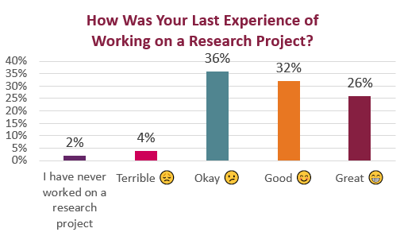

Start with Wikipedia
 It may seem odd for a teacher to suggest it, but you can start your research process by finding relevant entries in Wikipedia. Believe it or not, Wikipedia is a great place to start research. Just don’t end your research there.
It may seem odd for a teacher to suggest it, but you can start your research process by finding relevant entries in Wikipedia. Believe it or not, Wikipedia is a great place to start research. Just don’t end your research there.
- Go to a Wikipedia page matching the topic you’re exploring in your Recommendation Report.
- Skim through the page for background information and for a quick overview of other details on the topic.
- Check links under the See Also heading, following any that seem relevant to find related information.
- Skim through the References or Works Cited section to find further sources you can use.
- Visit the sites listed in the External Links section, which can yield more details for your report.
Your Research Experience
In the Week 9 Check-In Survey, I asked you to tell me how your last experience of working on a research project went. Here’s what you had to say:

Long Description of Graph
This bar graph shows the responses to the question, How was your last experience of working on a research project? The responses were as follows:
- 26% Great 😁
- 32% Good 😊
- 36% Okay 😕
- 4% Terrible 😟
- 2% I have never worked on a research project
Research Questions & Problem Statements
Creating a strong research question helps you frame your research and explain your goals in a short sentence. In this LinkedIn Learning video, Rolin Moe explains How to write a research question (2m 39s).
LinkedIn Learning videos are free with your VT login. Follow these instructions to login.
Once you have composed your research question, you’re ready to expand on your ideas by writing a problem statement. Rolin Moe tells you How to develop a problem statement (3m 18s) in this LinkedIn Learning video:
More Online Sources to Mine
University Libraries Research Guides
This page may look boring, but drill down and you’ll find online databases and websites for nearly any topic you can think of.
Opposing Viewpoints in Context from Gale
This collection explores both sides of a variety of issues, so you can uncover and counter any possible objections your readers may raise.
CQ Researcher
Find resources on current events and issues that you can use to explore your topic further.